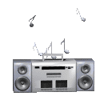

Give the album images a bit to load!
I'm surprised that there are so many people who value physical releases of games yet very few who value physical releases of music (especially in CD form). I guess it makes a little more sense because music is a simple audio file, therefore it's not like there is any risk of music disappearing off the face of the net like a game getting removed from an e-shop. No such thing as closed-source music... Even then, I feel like there's alot to the CD experience that you lose from streaming... If you put it in a stereo or CD player, more often than not you will end up listening to the whole album at least once through rather than just streaming the hits in your playlist. You get to physically wield some (hopefully) beautiful art within your hands, maybe even get some cool notes or song lyrics if you pull out the sleeve/booklet. It feels so much more personal. It's almost like having a real present from the artists given directly to you...
Anywho, you can tell I still love my CDs alot. I started my collection in high school because I didn't have a phone and wanted a way to listen to Smashing Pumpkins while I was crying in first period, so I ended up buying a CD player I carried around (and dropped outta my hoodie pocket) all the time. I've been slowly increasing my collection since then, and now since most of my local music/electronic stores have closed, it's become a hunt. Here's where I'll be keeping track of everything and giving my takes on each new album I get. Reviews (or whatever you might call it) will be added over time. If an album cover has a yellow border, click it to read my "review". Sorted by most recent acquisitions at the top and descending to when I THINK I got the oldest ones.
 "Dusk City" by Ultima Radio (2019)
"Dusk City" by Ultima Radio (2019)
 "A Thousand Shapes" by Ultima Radio (2017)
"A Thousand Shapes" by Ultima Radio (2017)
 "Liquor in the Front" by The Reverend Horton Heat (1994)
"Liquor in the Front" by The Reverend Horton Heat (1994)
 "Another Perfect Day" by Motörhead (1983
"Another Perfect Day" by Motörhead (1983
 "Sailing the Seas of Cheese" by Primus (1991)
"Sailing the Seas of Cheese" by Primus (1991)
 "Pork Soda" by Primus (1993)
"Pork Soda" by Primus (1993)
 "The Daily Grind" by No Use for a Name (1993)
"The Daily Grind" by No Use for a Name (1993)
 "Catch the Rainbow: The Anthology" by Rainbow (2003)
"Catch the Rainbow: The Anthology" by Rainbow (2003)
 "Earth 2: Special Low Frequency Version" by Earth (1993)
"Earth 2: Special Low Frequency Version" by Earth (1993)
 "Come on Feel the Lemonheads" by The Lemonheads (1993)
"Come on Feel the Lemonheads" by The Lemonheads (1993)
 "Dreamer" by Bobby "Blue" Bland (1974)
"Dreamer" by Bobby "Blue" Bland (1974)
 "Let's Face It" by The Mighty Mighty Bosstones (1997)
"Let's Face It" by The Mighty Mighty Bosstones (1997)
 "Been Caught Stealing" by Jane's Addiction (1990)
"Been Caught Stealing" by Jane's Addiction (1990)
 "Nothing's Shocking" by Jane's Addiction (1988)
"Nothing's Shocking" by Jane's Addiction (1988)
 "Purple Haze From East Vol. 2" by Psyche Delta Productions (2023)
"Purple Haze From East Vol. 2" by Psyche Delta Productions (2023)
 "Purple Haze From East Vol. 1" by Psyche Delta Productions (2022)
"Purple Haze From East Vol. 1" by Psyche Delta Productions (2022)
 "Mr. Morale and the Big Steppers" by Kendrick Lamar (2022)
"Mr. Morale and the Big Steppers" by Kendrick Lamar (2022)
 "Funk Classics - The 80's" by Various Artists (1997)
"Funk Classics - The 80's" by Various Artists (1997)
 "Funk Classics - The 70's Vol. 2" by Various Artists (1997)
"Funk Classics - The 70's Vol. 2" by Various Artists (1997)
 "Funk Classics - The 70's" by Various Artists (1997)
"Funk Classics - The 70's" by Various Artists (1997)
 "12 Bar Blues" by Scott Weiland (1998)
"12 Bar Blues" by Scott Weiland (1998)
 "Jeremy" by Pearl Jam (1992)
"Jeremy" by Pearl Jam (1992)
 "Classic MTV: Class of 1983" by Various Artists (1994)
"Classic MTV: Class of 1983" by Various Artists (1994)
 "Remain in Light" by Talking Heads (1980)
"Remain in Light" by Talking Heads (1980)
 "Pure Frosting" by The Presidents of the United States of America (1998)
"Pure Frosting" by The Presidents of the United States of America (1998)
 "Tyrannosaurus Hives" by The Hives (2004)
"Tyrannosaurus Hives" by The Hives (2004)
 "Black Cherry" by Goldfrapp (2003)
"Black Cherry" by Goldfrapp (2003)
 "The Crow - Original Motion Picture Soundtrack" (1994)
"The Crow - Original Motion Picture Soundtrack" (1994)
 "The Definitive Collection Plus..." by Ohio Players (2018)
"The Definitive Collection Plus..." by Ohio Players (2018)
 "People's Instinctive Travels and the Paths of Rhythm" by A Tribe Called Quest (1990)
"People's Instinctive Travels and the Paths of Rhythm" by A Tribe Called Quest (1990)
 "Modern Life Is Rubbish" by Blur (1993)
"Modern Life Is Rubbish" by Blur (1993)
 "Greatest Hits" by Spice Girls (2008)
"Greatest Hits" by Spice Girls (2008)
 "Contraband" by Velvet Revolver (2004)
"Contraband" by Velvet Revolver (2004)
 "Fragile" by Yes (1971)
"Fragile" by Yes (1971)
 "The Low End Theory" by A Tribe Called Quest (1991)
"The Low End Theory" by A Tribe Called Quest (1991)
 "Peace Love Death Metal" by Eagles of Death Metal (2004)
"Peace Love Death Metal" by Eagles of Death Metal (2004)
 "Head Hunters" by Herbie Hancock (1973)
"Head Hunters" by Herbie Hancock (1973)
 "Sleeping Through The War" by All Them Witches (2017)
"Sleeping Through The War" by All Them Witches (2017)
 "Countdown to Extinction" by Megadeth (1992)
"Countdown to Extinction" by Megadeth (1992)
 "Houdini" by Melvins (1993)
"Houdini" by Melvins (1993)
 Self-titled by Alice in Chains (1995)
Self-titled by Alice in Chains (1995)
 "Purple" by Stone Temple Pilots (1994)
"Purple" by Stone Temple Pilots (1994)
 "The Number of the Beast" by Iron Maiden (1998)
"The Number of the Beast" by Iron Maiden (1998)
 "Badmotorfinger" by Soundgarden (1991)
"Badmotorfinger" by Soundgarden (1991)
 "From the Muddy Banks of the Wishkah" by Nirvana (1996)
"From the Muddy Banks of the Wishkah" by Nirvana (1996)
 "Kettle Whistle" by Jane's Addiction (1997)
"Kettle Whistle" by Jane's Addiction (1997)
 "Core" by Stone Temple Pilots (1992)
"Core" by Stone Temple Pilots (1992)
 "No. 4" by Stone Temple Pilots (1999)
"No. 4" by Stone Temple Pilots (1999)
 "Good God's Urge" by Porno for Pyros (1996)
"Good God's Urge" by Porno for Pyros (1996)
 Self-titled by Porno for Pyros (1993)
Self-titled by Porno for Pyros (1993)
 "Songs for the Deaf" by Queens of the Stone Age (2002)
"Songs for the Deaf" by Queens of the Stone Age (2002)
 "In Utero" by Nirvana (1993)
"In Utero" by Nirvana (1993)
 "Dummy" by Portishead (1994)
"Dummy" by Portishead (1994)
 "Brown Album" by Primus (1997)
"Brown Album" by Primus (1997)
 "AEnima" by TOOL (1996)
"AEnima" by TOOL (1996)
 Self-titled by System of a Down (1998)
Self-titled by System of a Down (1998)
 "Toxicity" by System of a Down (2001)
"Toxicity" by System of a Down (2001)
 "Palladium, Hollywood 1990" by Nirvana (2018)
"Palladium, Hollywood 1990" by Nirvana (2018)
 "Nothing Safe: Best of the Box" by Alice in Chains (1999)
"Nothing Safe: Best of the Box" by Alice in Chains (1999)
 "Facing the Incurable" by A Dying Planet (2018)
"Facing the Incurable" by A Dying Planet (2018)
 "Binaural" by Pearl Jam (2000)
"Binaural" by Pearl Jam (2000)
 "MTV Unplugged in New York" by Nirvana (1994)
"MTV Unplugged in New York" by Nirvana (1994)
 "Superunknown" by Soundgarden (1994)
"Superunknown" by Soundgarden (1994)
 "Down on the Upside" by Soundgarden (1991)
"Down on the Upside" by Soundgarden (1991)
 "OK Computer OKNOTOK" by Radiohead (2017)
"OK Computer OKNOTOK" by Radiohead (2017)
 "Live at Reading" by Nirvana (2009)
"Live at Reading" by Nirvana (2009)
 "Hypnotize" by System of a Down (2005)
"Hypnotize" by System of a Down (2005)
 "Siamese Dream" by Smashing Pumpkins (1993)
"Siamese Dream" by Smashing Pumpkins (1993)
 "Mellon Collie and the Infinite Sadness" by Smashing Pumpkins (1995)
"Mellon Collie and the Infinite Sadness" by Smashing Pumpkins (1995)
 "Dirt" by Alice in Chains (1992)
"Dirt" by Alice in Chains (1992)
 "Tiny Music...Songs from the Vatican Gift Shop" by Stone Temple Pilots (1996)
"Tiny Music...Songs from the Vatican Gift Shop" by Stone Temple Pilots (1996)
 "Jar of Flies" by Alice in Chains (1993)
"Jar of Flies" by Alice in Chains (1993)
 "MTV Unplugged" by Alice in Chains (1996)
"MTV Unplugged" by Alice in Chains (1996)
 "LIVE" by Alice in Chains (2000)
"LIVE" by Alice in Chains (2000)
 "untitled unmastered." by Kendrick Lamar (2016)
"untitled unmastered." by Kendrick Lamar (2016)
 "Greatest Hits" by Foo Fighters (2009)
"Greatest Hits" by Foo Fighters (2009)
 "Pulp Fiction: Music From The Motion Picture" (1994)
"Pulp Fiction: Music From The Motion Picture" (1994)
 "Living Field" by the pillows (1995)
"Living Field" by the pillows (1995)
 "Jojo's Bizarre Adventure: Battle Tendency" by Taku Iwasaki (2013)
"Jojo's Bizarre Adventure: Battle Tendency" by Taku Iwasaki (2013)
 "The Mouse and the Mask" by Danger Doom (2005)
"The Mouse and the Mask" by Danger Doom (2005)
Current wishlist:
- "Echo of Miles: Scattered Tracks Across the Path" box set by Soundgarden
- Every album Queens of the Stone Age has released :3
- Self-titled by The Presidents of the United States of America
- "Bleach" by Nirvana
- "To Pimp A Butterfly" by Kendrick Lamar
- "Ultramega OK" by Soundgarden
- "Sap" by Alice in Chains
- "Madvillainy" by Madvillain
- "Rust in Peace" by Megadeth
- "In God We Trust, Inc." by Dead Kennedys
- "Plastic Surgery Disasters" by Dead Kennedys
- "Landshark" by Fang
- "In Rainbows" by Radiohead
- "TA13OO" by Denzel Curry
- "The Edges of Twilight" by The Tea Party
- "Follow the Leader" by Korn
- "Undertow" by TOOL
- "Pieces of a Man" by Gil Scott-Heron
- "Gravity X" by Truckfighters
- "High Visceral, Pt. 1" by Psychedelic Porn Crumpets
- "Splendor Solis" by The Tea Party
- Self-titled by Heavy Water Experiments
- "Frankenstein Girls Will Seem Strangely Sexy" by Mindless Self Indulgence
- "The Pick of Destiny" by Tenacious D
- "Moving Pictures" by Rush
- "Exmilitary" by Death Grips
- "ORANGE&BLUE" by COIL